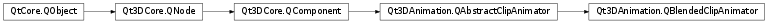

Qt3DAnimation.QBlendedClipAnimator¶
Detailed Description¶
QBlendedClipAnimatoris a component providing animation playback capabilities of a tree of blend nodes.An instance of
QBlendedClipAnimatorcan be aggregated by a QEntity to add the ability to play back animation clips and to apply the calculated animation values to properties of QObjects.Whereas a
QClipAnimatorgets its animation data from a single animation clip,QBlendedClipAnimatorcan blend together multiple clips. The animation data is obtained by evaluating a so called blend tree . A blend tree is a hierarchical tree structure where the leaf nodes are value nodes that encapsulate an animation clip (QAbstractAnimationClip); and the internal nodes represent blending operations that operate on the nodes pointed to by their operand properties.To associate a blend tree with a
QBlendedClipAnimator, set the animator’sPySide2.Qt3DAnimation.Qt3DAnimation::QBlendedClipAnimator.blendTree()property to point at the root node of your blend tree:auto blendTreeRoot = new QAdditiveClipBlend(); ... auto animator = new QBlendedClipAnimator(); animator->setBlendTree(blendTreeRoot);A blend tree can be constructed from the following node types:
Note
The blend node tree should only be edited when the animator is not running.
Qt3DAnimation.QClipBlendValueQt3DAnimation.QLerpClipBlendQt3DAnimation.QAdditiveClipBlendAdditional node types will be added over time.
As an example consider the following blend tree:
Clip0---- | Lerp Node---- | | Clip1---- Additive Node | Clip2----This can be created and used as follows:
// Create leaf nodes of blend tree auto clip0 = new QClipBlendValue( new QAnimationClipLoader(QUrl::fromLocalFile("walk.json"))); auto clip1 = new QClipBlendValue( new QAnimationClipLoader(QUrl::fromLocalFile("run.json"))); auto clip2 = new QClipBlendValue( new QAnimationClipLoader(QUrl::fromLocalFile("wave-arm.json"))); // Create blend tree inner nodes auto lerpNode = new QLerpClipBlend(); lerpNode->setStartClip(clip0); lerpNode->setEndClip(clip1); lerpNode->setBlendFactor(0.5f); // Half-walk, half-run auto additiveNode = new QAdditiveClipBlend(); additiveNode->setBaseClip(lerpNode); // Comes from lerp sub-tree additiveNode->setAdditiveClip(clip2); additiveNode->setAdditiveFactor(1.0f); // Wave arm fully // Run the animator auto animator = new QBlendedClipAnimator(); animator->setBlendTree(additiveNode); animator->setChannelMapper(...); animator->setRunning(true);By authoring a set of animation clips and blending between them dynamically at runtime with a blend tree, we open up a huge set of possible resulting animations. As some simple examples of the above blend tree, where alpha is the additive factor and beta is the lerp blend factor we can get a 2D continuum of possible animations:
(alpha = 0, beta = 1) Running, No arm waving --- (alpha = 1, beta = 1) Running, Arm waving | | | | | | (alpha = 0, beta = 0) Walking, No arm waving --- (alpha = 0, beta = 1) Running, No arm wavingMore complex blend trees offer even more flexibility for combining your animation clips. Note that the values used to control the blend tree (alpha and beta above) are simple properties on the blend nodes. This means, that these properties themselves can also be controlled by the animation framework.
-
class
PySide2.Qt3DAnimation.Qt3DAnimation.QBlendedClipAnimator([parent=nullptr])¶ Parameters: parent – PySide2.Qt3DCore.Qt3DCore::QNode
-
PySide2.Qt3DAnimation.Qt3DAnimation.QBlendedClipAnimator.blendTree()¶ Return type: PySide2.Qt3DAnimation.Qt3DAnimation::QAbstractClipBlendNodeSee also
PySide2.Qt3DAnimation.Qt3DAnimation::QBlendedClipAnimator.setBlendTree()
-
PySide2.Qt3DAnimation.Qt3DAnimation.QBlendedClipAnimator.blendTreeChanged(blendTree)¶ Parameters: blendTree – PySide2.Qt3DAnimation.Qt3DAnimation::QAbstractClipBlendNode
-
PySide2.Qt3DAnimation.Qt3DAnimation.QBlendedClipAnimator.setBlendTree(blendTree)¶ Parameters: blendTree – PySide2.Qt3DAnimation.Qt3DAnimation::QAbstractClipBlendNodeSee also
PySide2.Qt3DAnimation.Qt3DAnimation::QBlendedClipAnimator.blendTree()
© 2018 The Qt Company Ltd. Documentation contributions included herein are the copyrights of their respective owners. The documentation provided herein is licensed under the terms of the GNU Free Documentation License version 1.3 as published by the Free Software Foundation. Qt and respective logos are trademarks of The Qt Company Ltd. in Finland and/or other countries worldwide. All other trademarks are property of their respective owners.